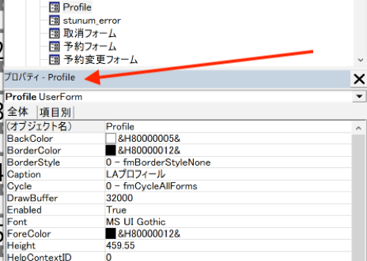

LAプロフィールユーザーフォームの設定
LAの詳しいプロフィールを閲覧できるユーザーフォームを設定することができます。VisualBasicを開き、フォームフォルダのProfileをクリックします。
プロフィール画面が表示され、編集することができます。ツールボックスを使用することで画像やテキストを配置することができます。


ツールボックスの説明です。（使いそうなものの最低限しかしませんので、あとはGoogle先生に聞いてください）
- 矢印は選択ツールで、オブジェクト（画像とかテキストとか）を選択しプロパティウィンドウ（後述）でオブジェクトのプロパティ（表示するテキストとか、フォントとか画像パスとか）を編集することができます。
- Aのアイコンは選択するとラベル（ワード的に言えばテキストボックス）をユーザーフォーム上でドラックすることで作成できます。
- 真ん中の行のルーズリーフのインデックスのようなアイコンをクリックしてドラッグすると、タブで選択できるエリアを作成することができます。
- 右下の青い波立ってる的な画像アイコンを選択すると画像エリアをユーザーフォーム上でドラッグすることで作成できます。

表示されていない場合はメニューバーの表示→プロパティウィンドウで表示できます。


選択ツールでオブジェクトを選択、プロパティを編集することで色々いじれます。1から10まで解説するのはしませんがある程度直感でいじれます。ある程度書いておきます。
- BackColor オブジェクトの背景色を設定します
- BackStyle 背景の有無の選択。0(transparent)→透明 1(opaque)→BackColorで選択した色を表示
- BorderColor オブジェクトの境界線（輪郭線）の色を設定します。
- BorderStyle 境界線の有無の設定
- Caption ラベルに表示するテキストの設定します
- Enabled オブジェクトが実際にエクセルのデータで表示されるかを設定します
- Font フォントの設定
- ForeColor 文字の色
- Height オブジェクトの高さ
- Left オブジェクトの横の長さ
- Specialeffect オブジェクトを立体的に見せたりできる
- TextAlign テキストの中央揃え、左揃えなどの設定
- Picture 表示する画像をファイルダイアログから選べます